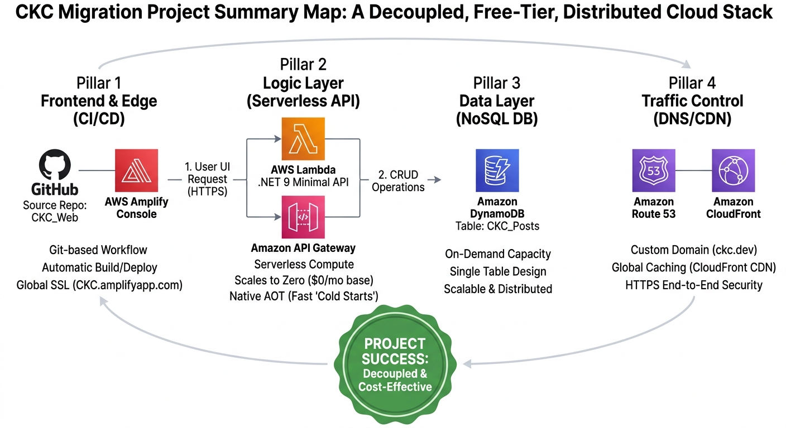

The CKC Migration: Final Reveal & Lessons
Five posts, four AWS services, and one massive architectural shift later, the Coffee + Kids + Code migration is complete. What started as a goal to "just move the blog" turned into a masterclass in building a modern, decoupled, and cost-effective cloud ecosystem.
The Finished Product
If you’ve been following along, here is the architecture we’ve built together:
- Frontend: Next.js hosted on AWS Amplify with a global CI/CD pipeline.
- Database: A serverless DynamoDB table that scales to zero cost.
- Backend: A high-performance .NET 9 Minimal API running on AWS Lambda.
- Traffic: A custom domain managed by Route 53 and accelerated by CloudFront.

The Big Picture: A fully decoupled, enterprise-ready cloud stack.
The "Master's Level" Results
Beyond the code, here are the three biggest wins from this migration:
1. Operational Cost: $0.00
By choosing Serverless options (Amplify, Lambda, DynamoDB), the entire platform lives comfortably within the AWS Free Tier. I have enterprise-grade power with a hobbyist budget. For anyone looking to build a portfolio, this is the gold standard.
2. Total Decoupling
Because the .NET backend is separate from the Next.js frontend, I’ve future-proofed my work. If I decide to build a mobile app next month, it can use the exact same API. This is "Secret Sauce" territory—building systems that are modular and reusable.
3. Professional Growth
This project proved that I could navigate the complexities of AWS—managing DNS records, configuring SSL certificates, and deploying compiled C# code to a serverless environment. These are the skills that separate "developers" from "architects."
What’s Next for CKC?
The migration was just the beginning. Now that the plumbing is solid, it's time to build. My next phase involves integrating the Open Doors Academy features—bringing interactive math and spelling tools for kids directly into this platform.
I’m also working on my "Secret Sauce" freelance search engine, which will live as a separate module powered by the same .NET backend we built in Part 3.
Thank you for joining me on this migration journey. If you found this helpful, or if you're planning your own move to the cloud, reach out! The best part of Coffee + Kids + Code is the community we build along the way.
Start Over: ← Part 1 — The Hosting Platform